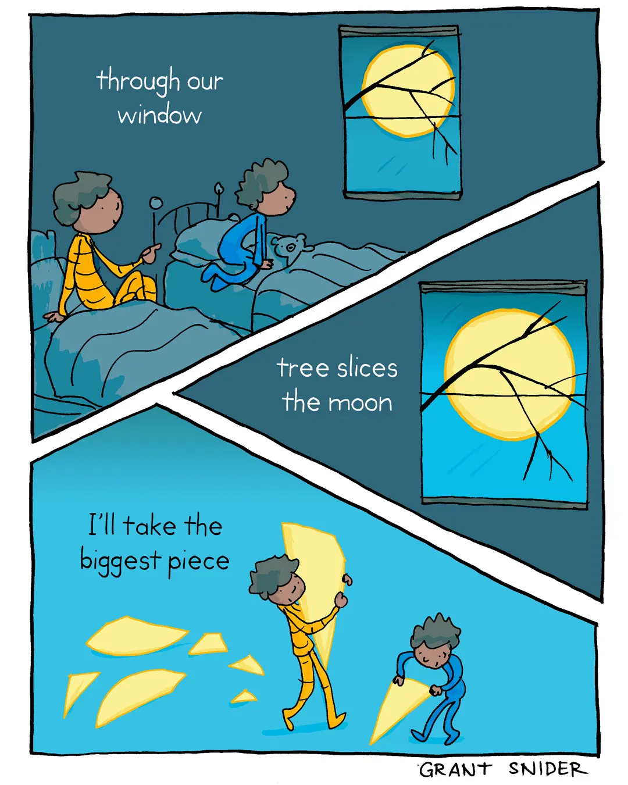

Happy Friday! Thank you for supporting the Daily Bulletin project.
- Book a meeting with the WellCo chairs.
- Provide feedback to WellCo through the WellCo Line.
- Sign up to take over a WellCo session.
- Suggest improvements to the Daily Bulletin project.
- Unsubscribe if you no longer wish to receive emails from the Daily Bulletin project.
Wellbeing Inspirations
Want to contribute to a future Daily Bulletin? Share your inspirations to give everyone some morning wellbeing energy!
Cartoon of the Day

Created by Grant Snider.
Delicious Dinings
| Day | Meal | Options |
|---|---|---|
| Fri | Breakfast | Burrito |
| Lunch | Fish & Chips | |
| Crispy Buttermilk Quorn 🌱 | ||
| Dinner | Christmas Dinner 🎄 | |
| Sat | Breakfast | Hot Breakfast |
| Lunch | Roast Cauliflower Steaks 🌱 | |
| Mushroom Pasta Bake 🌱 | ||
| Dinner | Chicken Fajitas | |
| Bean Fajitas 🌱 |
The catering team would like to remind everyone to wash their hands before coming to the dining hall, and to refrain from eating in the servery area. Thank you!
Retrieved from Shared Weekly Menu. For reference only; accuracy not guaranteed.
Important Events
| Day | Time | Event | Location |
|---|---|---|---|
| Fri | 18:00–22:00 | House Christmas Parties | Various Venues |
| Sat | 07:00–11:00 | SAT | Sports Hall |
| 10:00–17:00 | Christmas Fayre | Castle, Art Centre | |
| 020:3–22:00 | SEAO National Evening | Tythe Barn |
Retrieved from What's On This Week.
Today in History
- 1965 – The "glasnost meeting" took place in Moscow, becoming the first demonstration in the Soviet Union after World War II and marking the beginning of the civil rights movement in the country.
- 1972 – Gough Whitlam took office as the 21st Prime Minister of Australia and formed a duumvirate with his deputy Lance Barnard, ending 23 years of Liberal–Country Party government.
Retrieved from Wikipedia.